Client Eva Quintos Tennant, Assistant Director of Marketing and Communications at STAMP
Overview
Project Brief
The Adele H. Stamp Student Union (STAMP) is the student activity center at the University of Maryland.
It aims to nurture a welcoming and inclusive community through events, resources, and intentional programming.
The university is home to 40,000+ students who have a wide range of interests, habits, and social media preferences and
with over 3,000 events happening in and around the building each year it had become increasingly difficult for the Marketing
and Communications Department to effectively communicate and engage with the student body.
The Problem
Despite having a dedicated website, STAMP departments used various channels of communication (social media, email
newsletters, etc.) but none to their full potential.
The Goal
The objective was to identify the most effective way for STAMP Marketing and Communications to reach their audience and
provide recommendations for improvement to their strategy.
The Process
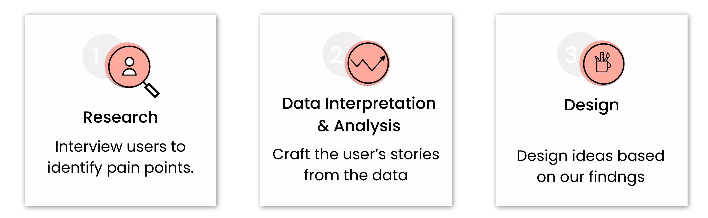
Research
Defining the Scope
Understanding the Problem with Background Research
To define the scope of the project, we performed a quick in person survey of students in STAMP to gauge what the
student body’s perception of the usefulness of the current methods being used to reach them. Subsequently, we met with our
client to learn more about what channels were being used to reach the student body and how they are being utilized. From
this discussion we were asked to discover which channels were most effective and make recommendations on where the marketing
team's efforts should be focused.
Contextual Inquiry
The contextual design process allowed us to gather insights into the way students find events enabling us to propose
the best ways for the marketing team to reach their audience.
We decided to interview students that represented the following groups:
Underclassmen
Upperclassmen
Graduate Students
On-Campus (1/2mile radius)
Off-Campus Students
International Students
Domestic Students
Interview Focus
How do students learn about upcoming events?
What social media channels do they interact with?
What do students typically go to stamp for?
Do they attend events alone or with others?
What type of events do they attend?
Where do they keep track of information about
upcoming events they are interested in?
Observe how students use their choice of social
media for event finding
Observe how students navigate the stamp website
to find an event
Data Interpretation & Analyzation
Affinity Diagram
After we concluded eight contextual inquiries and interpretation sessions, we build an affinity diagram
to help us discover the various patterns within our data
We took over 400 notes from the interviews and placed them on the wall, with similar ideas in the same column.
Continuing with this process we found overarching themes that ultimately told a story about our users and their various
experiences in and around STAMP.
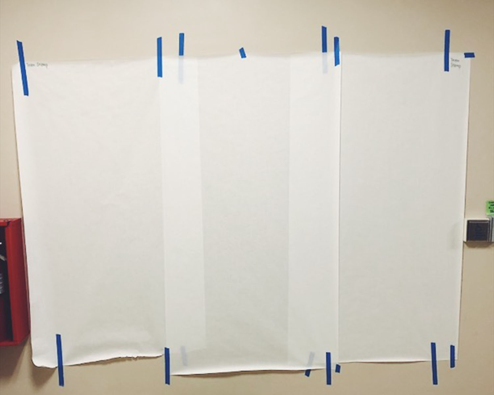
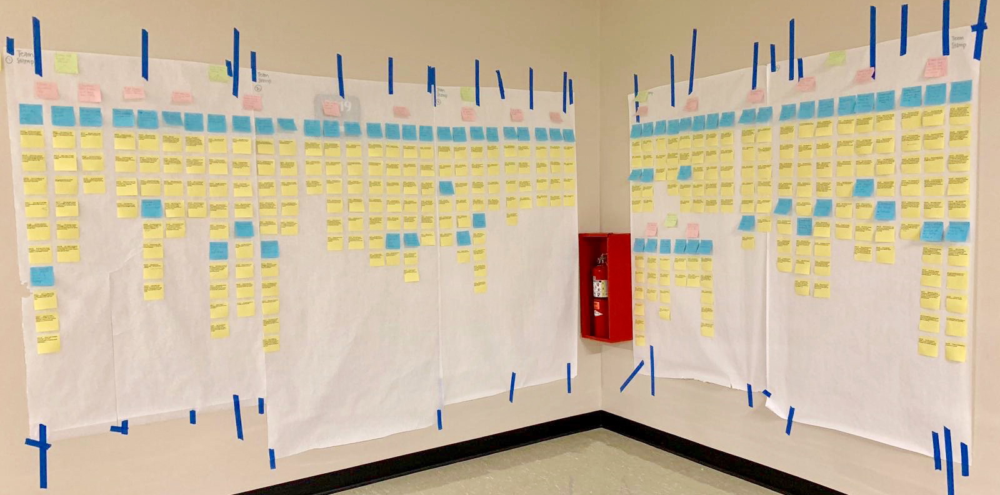
Key Findings
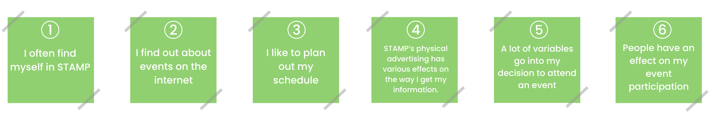
Stamp is a central hub for students. For everything from the food court to studying in the private
nooks, many students find themselves in STAMP throughout the week.
As we initially suspected, we discovered that by and large the majority of the UMD population commonly
finds out about events from the internet.
We also learned that there are a lot of students that like to plan out their schedule and upcoming
events, and there is a lot of variation in the approach students have.
One of the project goals our client set out for us was to learn how the current marketing channels affect
students, one of those channels was the physical advertising. We found that while some students engage with
posters, the TVs and way finders were not effective.
There are a multitude of variables that alter students’ decisions to attend events.
We learned that people (i.e. friends, classmates, etc.) have a large effect on students’ choice
in event attendance.
Day in the Life Model
During each interpretation session we created separate models for each interviewee and then consolidated them.
The purpose of creating a day in the life model was to graphically show how users accomplish the task of finding certain events. We wanted to
understand how the users navigated their world, what they did in different places, what devices they used to get things done, and how they access
the content they needed.
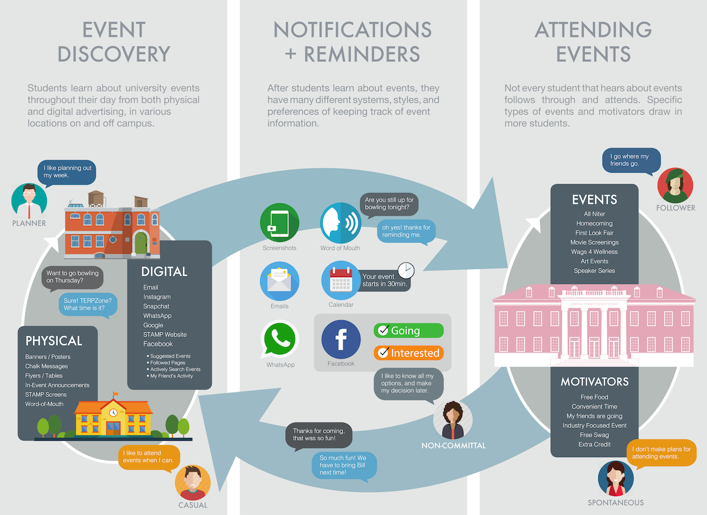
Key Findings
Based of our six larger findings we found that there were three main parts to a student’s event finding experience:
Discovery
Planning
Attendance
Sequence Model
Sequence models were built to capture the triggers, intents, and steps of each user's event finding process through the various channels they used.
These diagrams helped define the scenarios of use that our product design must support and identify lower-level usability issues. The individual models
were consolidated into one sequence model to drive detailed design.
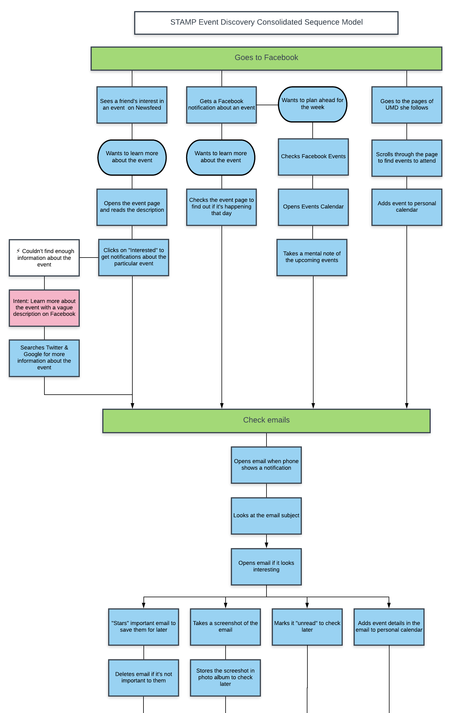
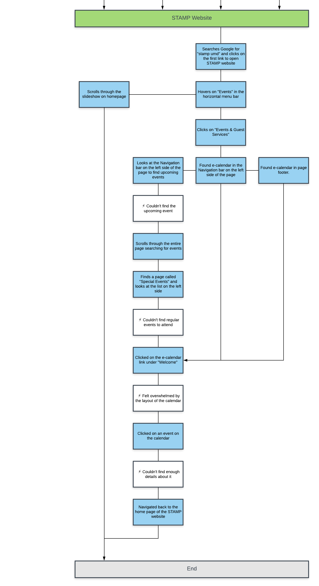
Key Findings
Major breakdowns we discovered through this model were:
Students had trouble finding upcoming events
Students had trouble finding enough information about the events
When visiting the STAMP website and viewing the event calendar, they had trouble finding the calendar and when they did, they were overwhelmed by the
number of events that were displayed. Due to this, they had trouble sifting through it all
Design
Visioning
To provide us with the opportunity to review the story crafted from the interview data, we performed a wall walk of our affinity diagram.
We created a list of all our ideas and divided them into two sections – issues and hot ideas. From this list, we chose five ideas to turn into design concepts.
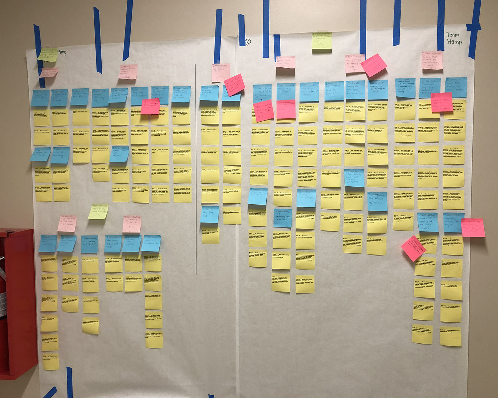
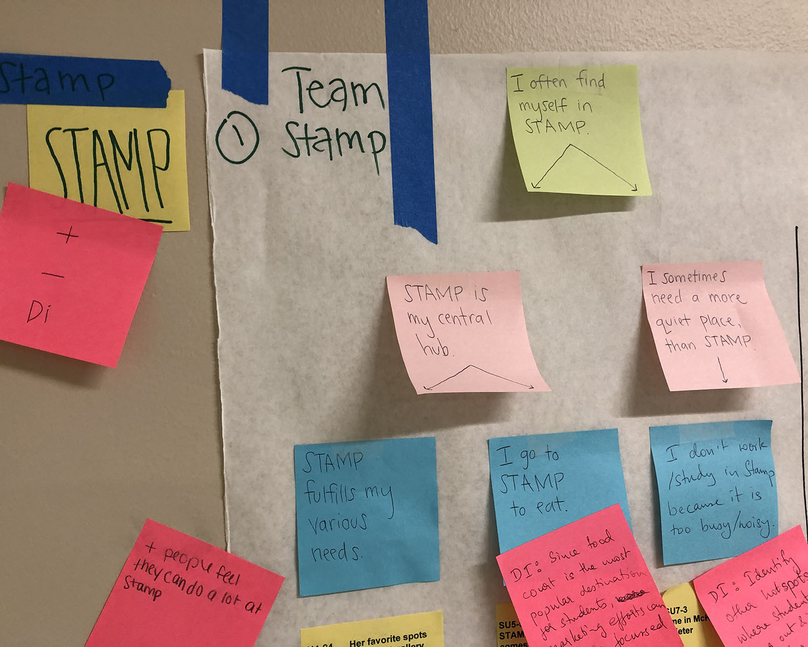
Product Concepts
Facebook Ads
Through our interviews, we discovered that Facebook was a common social media platform used by
students to find and track their events. Due to the fact that it was such a highly
used application and an integral part of many users lives, we believed that
targeted Facebook ads would allow the STAMP marketing team to reach a broader
audience. This is a relatively low cost feature on Facebook and would
allow the team to send out event promo to target user groups.
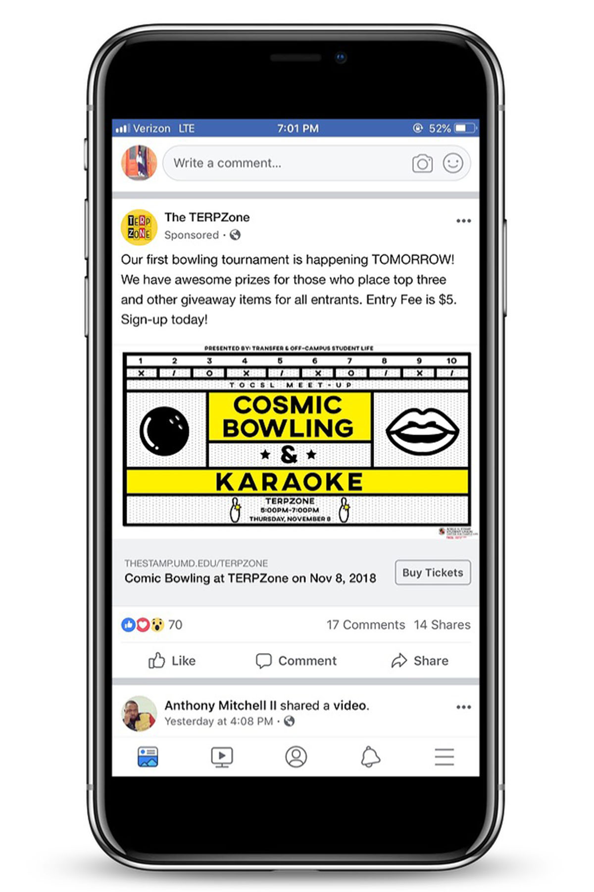
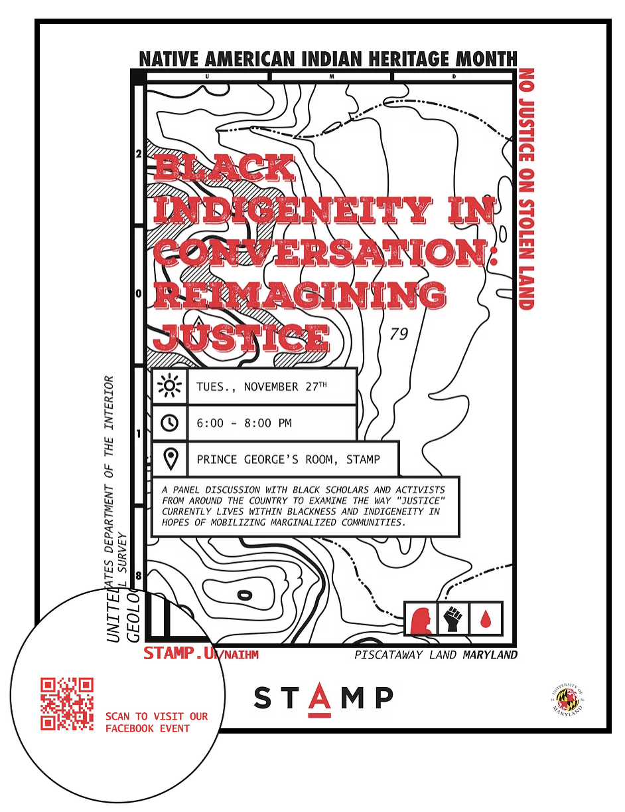
Poster QR Codes
STAMP's major form of advertisement was their numerous posters found around the building
as well as throughout campus. Many users indicated that they were engaged by the posters and
relied on them to find out about events. Students tended to take photos of the posters to save the
information and/or to look up the details later. We decided to capitalize on that aspect by suggesting
the addition of QR codes to the posters that connect to the event's Facebook page.
This allows for quick and easy access to events as well as the means to interact
with the event on the largely used social media form.
Food Court Banners
STAMP is the central hub for many students and one of the main reasons students
enter the building is to go to the food court. Various users noted that while in
the building they see many advertisements and take note of various events occurring.
Currently there is little to no advertising in the food court and through our research we advised
adding large banners in the main seating area of the food court to attract more attention
to upcoming events.
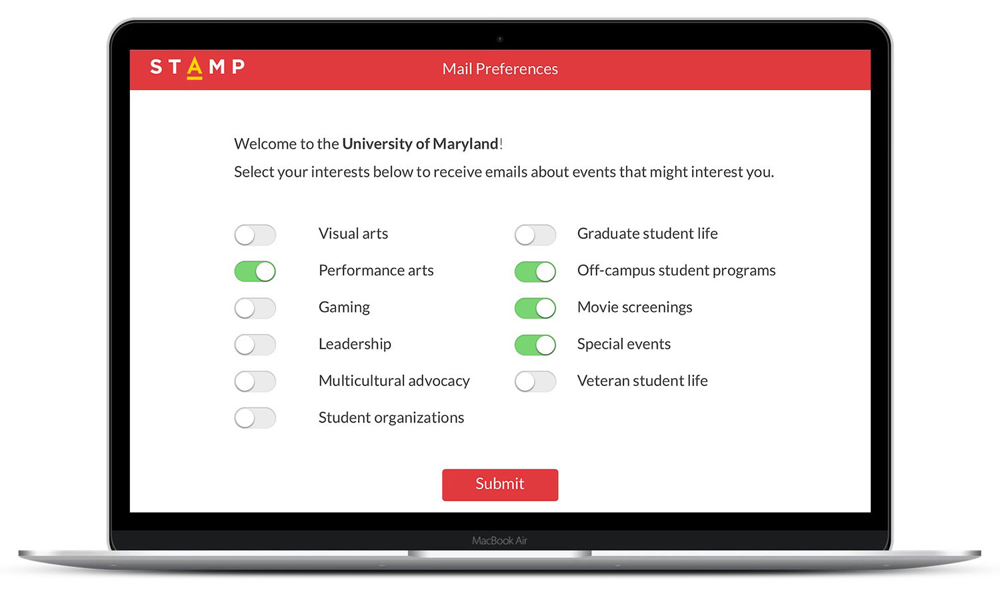
Personalized Newsletters
We found that a lot of students use email as a way to receive event information
from various organizations. However, emails are not currently personalized, and
many students get bombarded with mail that is not relevant to them. In an effort
to save their inboxes and help STAMP target specific groups, we proposed an opt
in system where students have the ability to select the topics they are interested
in and simply receive event emails related to those topics.
Add to Calendar
Many users indicated that an add to calendar button was helpful on other
sites and wished they had that capability on the STAMP calendar site. Although
this option is available it is difficult to find. We wanted to make it more
accessible to the user directly on the events and programs page. Once the user
clicks the button an .ics file is downloaded and the event is added to their
personal calendar.
Final Client Meeting
Our final step in the user research process was to report our findings and product concepts to our client. We conducted a board room
presentation with Eva Quintos Tennant, the Assistant Director of Marketing and Communications, joined by the Graphic Design and Marketing
Coordinators of STAMP.
They were excited about our recommendations and were interested in implementing some in their marketing strategy immediately.